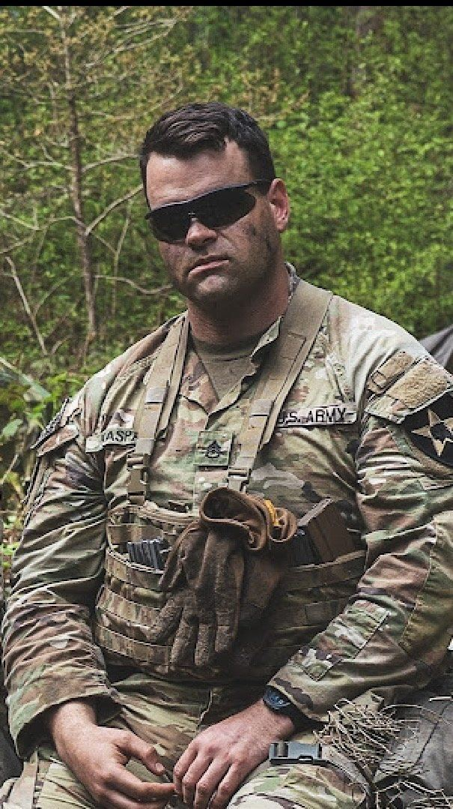

AI & DATA SCIENCE
Turning data into structured analysis, automation, and decision support.
Bridging military leadership, operations excellence, analytics, and AI implementation to solve complex problems and deliver practical, evidence-driven systems.

Turning data into structured analysis, automation, and decision support.
Driving mission outcomes through people, process, accountability, and technology.
Building governed frameworks that improve clarity, control, and execution.
13 years of military service built on duty, honor, evidence, and accountability.
Governed multi-agent control plane that orchestrates workflows, approvals, secure execution, and operational learning.
View project →NFL and MLB analytical systems built around provenance, validation, research discipline, and decision support.
View project →Evidence-based operating system for requirements, readiness, professional translation, and reusable career evidence.
View project →Requirement extraction, evidence matching, fit-gap analysis, and explainable opportunity decisions.
View project →From the battlefield to the boardroom.
Building systems. Solving hard problems. Delivering results.